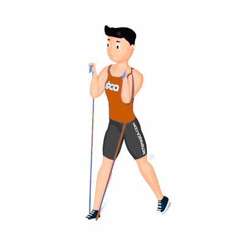

Afundo com Faixa Elástica

O exercício fortalece os quadris, os glúteos e os músculos que envolvem o joelho.
Ficha Técnica
Tipo: Funcional
Grupo Muscular: Perna
Aparelho: Nenhum
Músculos: Nenhum
Como realizar
- Fique em pé com um pé em cima de uma faixa de resistência;
- Enrole a ponta solta da tira sobre os ombros para que ela fique estendida a e dê um passo gigante para trás com o pé livre, para que você fique em uma posição dividida e calcanhar de volta é levantado;
- A partir daqui, dobre os quadris e joelhos para baixo para fazer o afundo;
- Complete uma série completa antes de passar para o lado oposto.
 RC STORE
RC STORE